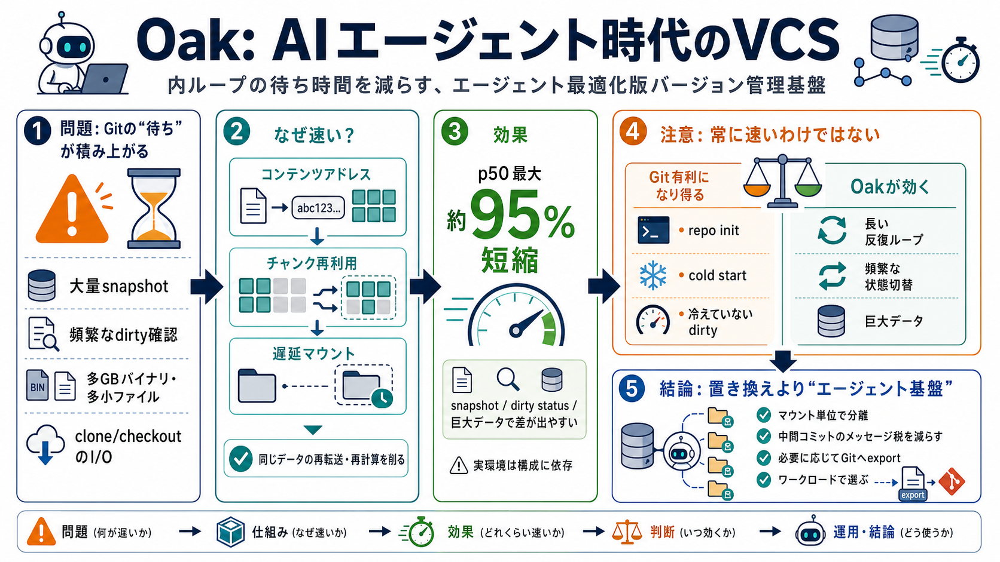

AI Agent Latency Benchmark and Methodology
AI agents on iPhone & iPadMac App. Native desktop experienceAgentic Compute Platform. The web platform for agentic compu…

AI agents on iPhone & iPadMac App. Native desktop experienceAgentic Compute Platform. The web platform for agentic compu…
# SVN vs Git Comparison. SVN and Git are both popular version control systems, but they have significant differences tha…
# Diffbot vs Git. ## Detailed Comparison. ## What are some alternatives to Diffbot, Git? ### Mercurial. Mercurial is ded…
Discover and share technology stacks from companies around the world. # Ant Media Server vs Git. ## Detailed Comparison.…
Published Time: 2024-08-05T08:20:37+00:00 Best Version Control Systems: Git Vs SVN - MNCBLOG officialAugust 5, 2024 Augu…